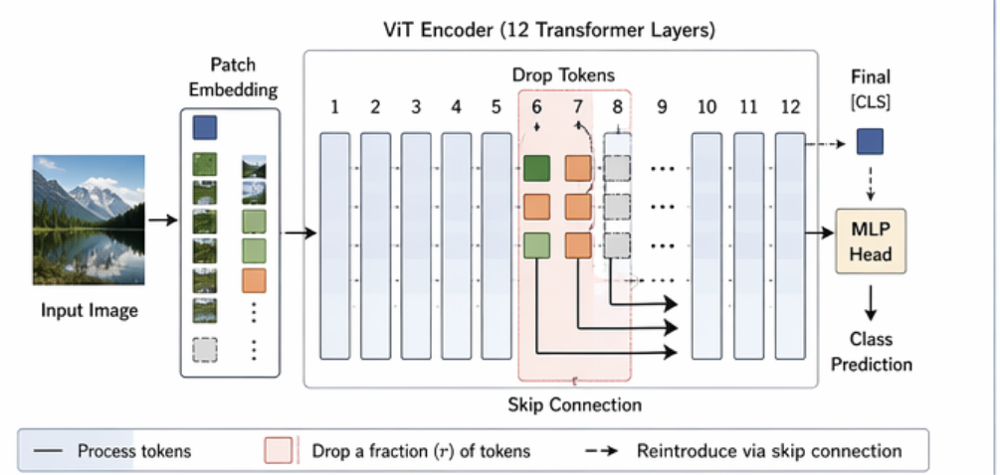
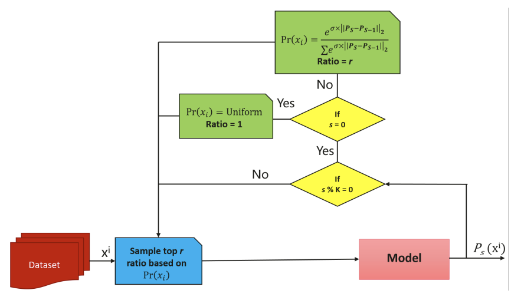
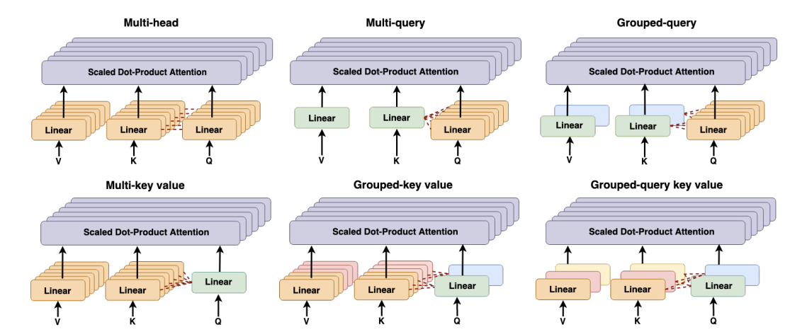
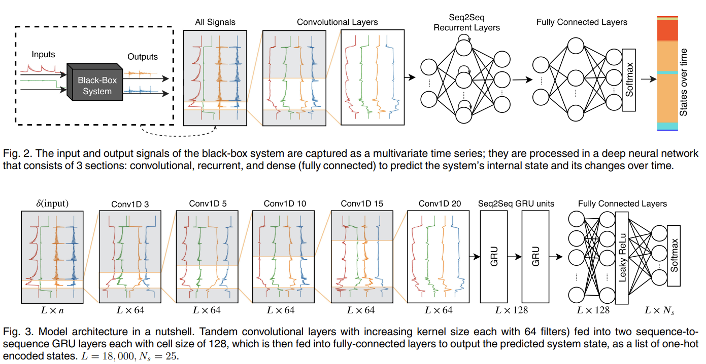
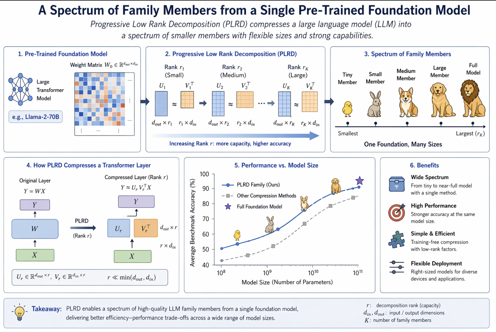

Foozhan AtaiefardI am a senior AI/ML researcher focused on multimodal generative AI, foundation models, and model optimization, with experience across VLMs, LLMs, GenAI, and efficient training/inference. I currently work at NVIDIA as a DevTech Engineer focused on deep learning research, VLM/CV models, generative AI, and model optimization. Prior to joining NVIDIA, I was a Senior AI Researcher at Ascend AI Research, where I worked on LLM, VLM, and CV foundation-model training/inference optimization, as well as long-context text generation. Before that, I was a Student Researcher at Oracle Labs, where I worked on LLM post-training and alignment for SQL code generation. I also worked on reinforcement learning trading agents and policy robustness at Intelius AI and the University of Calgary. I have had the privilege of working with Prof. Hadi Hemmati and Prof. Neil Walkinshaw during my time at the University of Calgary. I am also interested in any form of research collaboration. Email / CV / Google Scholar / LinkedIn / Github |
{kind=link}
Research |
|
 |
SkipViT: Speeding Up Vision Transformers with a Token-Level Skip Connection
F. Ataiefard, W. Ahmed, H. Hajimolahoseini, S. Asani, F. Javadi, M. Hassanpour, O. Awad, A. Wen, K. Liu, Y. Liu Edge Intelligence Workshop, AAAI 2024 paper |
|
 |
SwiftLearn: A Data-Efficient Training Method of Deep Learning Models using Importance Sampling
H. Hajimolahoseini, O. Awad, W. Ahmed, A. Wen, S. Asani, M. Hassanpour, F. Javadi, M. Ahmadi, F. Ataiefard, K. Liu, Y. Liu ENLSP Workshop, NeurIPS 2023 paper |
|
 |
GQKVA: Efficient Pre-training of Transformers by Grouping Queries, Keys, and Values
F. Javadi, W. Ahmed, H. Hajimolahoseini, F. Ataiefard, M. Hassanpour, S. Asani, A. Wen, O. Awad, K. Liu, Y. Liu ENLSP Workshop, NeurIPS 2023 paper |

|
Gray-box Adversarial Attack of Deep Reinforcement Learning-based Trading Agents
F. Ataiefard, H. Hemmati ICMLA 2023 paper |
|
 |
Deep State Inference: Toward Behavioral Model Inference of Black-box Software Systems
F. Ataiefard, M. J. Mashhadi, H. Hemmati, N. Walkinshaw IEEE Transactions on Software Engineering 2021 paper |
|
 |
Single parent family: A spectrum of family members from a single pre-trained foundation model
H. Hajimolahoseini, M. Hassanpour, F. Ataiefard, B. Chen, Y. Liu Under Review paper |

|
A Hybrid Approach for Thread Recommendation in Massive Open Online Course Forums
A. Kardan, A. Narimani, F. Ataiefard IJCSE 2017 paper |
|
Based on Jon Barron's website template. |